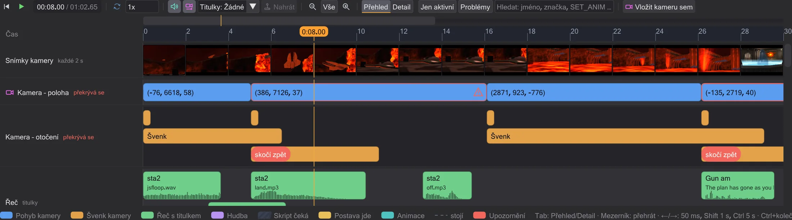
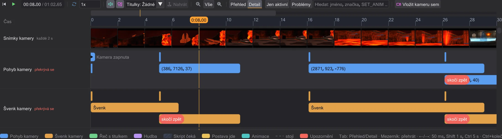
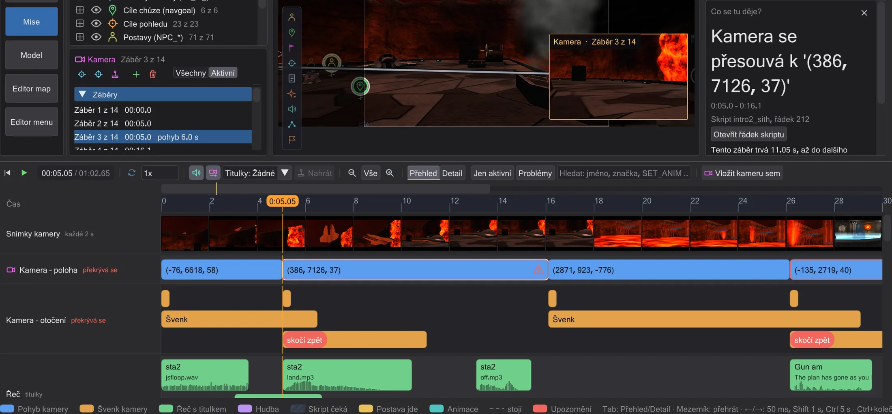
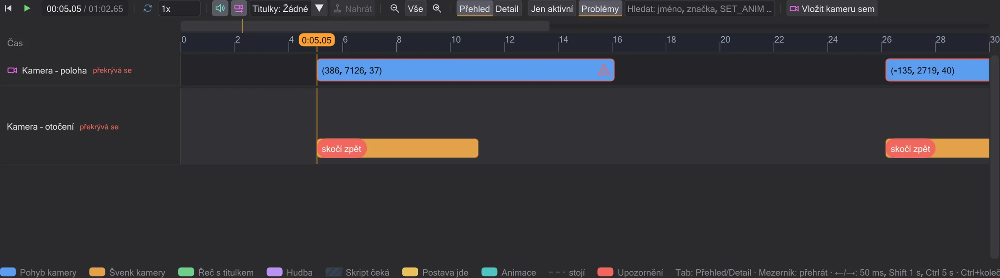
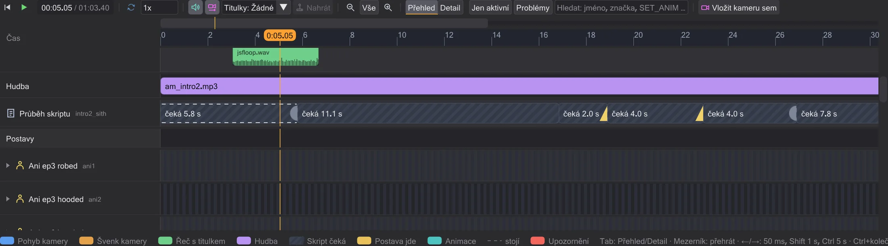
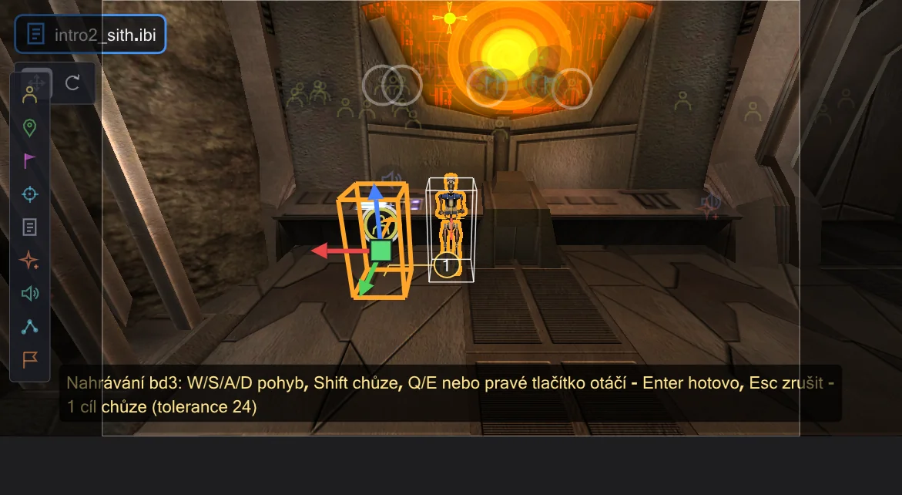
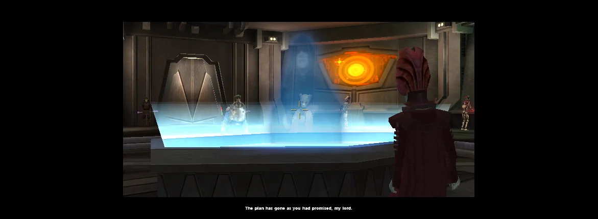

Časová osa
Časová osa přehrává scénu a ukazuje, kdy se co děje - záběry kamery se jmény, řeč s titulky, hudbu, čekání skriptu a každou postavu. Klikněte na blok a postranní panel ho vysvětlí; tažením se změní skript.

Přehrávání a pohyb#
Tlačítko přehrávání (▶) pod mapou spouští a zastavuje; s myší nad časovou osou dělá totéž Mezerník. Kliknutím nebo tažením na pravítku nastavíte čas - 3D pohled ukazuje scénu v tomto okamžiku. ← / → posunou o jeden herní snímek (50 ms, rastr herní logiky), se Shift o sekundu, s Ctrl o pět sekund, Home skočí na začátek. Legenda pod řádky tyto klávesy uvádí. Pole rychlosti scénu zpomalí (zvuk hraje jen při 1x), Smyčka ji opakuje. Titulky zobrazuje titulky v obrazu náhledu tak, jak to dělá hra (herní nastavení g_subtitles): se zapnutou skriptovou kamerou uprostřed spodního černého pruhu, vždy dva řádky, každou dvojici tak dlouho, kolik zvuku zaberou její písmena; Movie Duels je kreslí menší (cg_textprintscale, ve výchozím stavu 0,66). Jako ve hře je Jedi Academy a Movie Duels ve výchozím stavu nezobrazují, Jedi Outcast je zobrazuje v animačních sekvencích a postava se SET_USE_SUBTITLES své repliky zobrazuje vždy; SET_CAPTIONTEXTCOLOR mění barvu.
Scéna začíná úsekem asi 30 sekund. Vše zobrazí celou scénu, − a + oddálí a přiblíží, Ctrl+kolečko přibližuje kolem ukazatele myši, Shift+kolečko posouvá. Jen při přiblížení ukazuje tenký navigační pruh nad pravítkem, kterou část scény vidíte - kliknutím nebo tažením se tam přesunete.
Zvuk jako ve hře#
Náhled přehrává zvuky scény tak, jak to dělá hra. Slyšíte z kamery, kterou pohled ukazuje - při přehrávání z kamery animační sekvence. Každý zvuk se aktualizuje v každém snímku: odsuňte kameru a zeslábne, střihněte na jiné místo a uslyšíte, co je tam. Hlasová replika, která začala mimo dosah, běží dál potichu. Jako ve hře jen zdroje, které kamera mohla vidět (její PVS), nechají meče bzučet, reproduktory hrát ve smyčce, dveře a efekty znít; hlasy, zvuky poznámek ROFF a rozbíjené objekty jsou slyšet vždy. Neviditelné NPC nezapne svůj meč slyšitelně - zvuk zapnutí přijde, až se objeví. Hlasitosti se řídí výchozími hodnotami hry (efekty 0.5, hlasy 1.0, hudba 0.25) a lze je změnit v Úpravy → Předvolby. Zvuk hraje jen při rychlosti 1x.
sound na postavě zůstane podle pravidel Movie Duels tam, kde začala, a podle pravidel OpenJK se pohybuje s postavou (Předvolby). Podle pravidel OpenJK se spustí každá poznámka snímku ROFF (Movie Duels a Jedi Outcast spustí jen první) a loop sfx <sound> dá entitě zvuk ve smyčce až do loop sfx kill; poznámka USE <script> spustí tento skript na entitě a loop rof absolute|relative spustí dráhu znovu jako hra (úloha play nikdy neskončí, takže dowait na ni čeká navždy).Přehled a Detail#
Přehled ukazuje scénu na první pohled: Kamera – poloha má jeden blok na záběr, od jednoho pohybu kamery k dalšímu, pojmenovaný podle své značky (nebo čitelnými souřadnicemi); Kamera – otočení ukazuje švenky, švenk bez délky je označen jako střih. Řeč ukazuje každou repliku tak dlouhou jako její zvukový soubor, s mluvčím, titulkem z textových souborů hry (Jedi Academy a Movie Duels: strings/english/<mapa>.str, Jedi Outcast: strip/<mapa>.sp, včetně doplňkových balíčků, které některé mapy čtou) a průběhem vlny. Hudba ukazuje, která hudba hraje od kdy. Průběh skriptu ukazuje čekání skriptu jako šrafované bloky s tím, na co čekají, a jeho příkazy jako popsané značky; změna mapy je červená značka. Každá postava má jeden řádek: nahoře významné animace se jmény, dole její očíslované chůze, přerušovaná čára, kde stojí, šrafování, kde není vidět. Šipka u jména rozbalí její Animace a Příkazy.

Detail (nebo Tab nad časovou osou) rozdělí kameru na pohyb, švenk, přiblížení a prolínání a kreslí zorné pole a prolínání jako čáry. Mezi dvěma příkazy jsou rovné, protože je hra interpoluje lineárně - křivky náběhu neexistují. Když pohyb kamery začne dřív, než skončil předchozí téhož druhu, dostane vlastní dráhu a červené upozornění skočí zpět: hra převezme polohu a úhel až na konci pohybu (cg_camera.cpp), nový pohyb tedy začne tam, kde začal předchozí - kamera skočí zpět.
Co se tu děje?#

Klikněte na libovolný blok nebo značku: čas tam skočí, jeho řádek se vybere ve skriptu a pod sloupcem skriptu řekne rámeček Co se tu děje? srozumitelnými slovy, co dělá - kam se kamera pohybuje a jak dlouho, kdo říká kterou repliku, na co wait čeká a kdo ten signál posílá, která animace hraje a jak dlouho. Otevřít řádek skriptu otevře příkaz v editoru. Příkaz, který pochází z jiného skriptu (run, use, spawnscript), uvádí ten skript a svůj řádek v něm - Otevřít řádek skriptu otevře onen skript a vybere řádek; příkaz vložený simulací řádek nemá.
Filtry a hledání#
Jen aktivní skryje postavy, které ve viditelném úseku nic nedělají. Problémy ukáže jen místa s upozorněními: pohyby kamery, které skočí zpět, příkazy, které náhled zatím nenapodobuje, změnu mapy. Pole hledání filtruje podle jména, značky, souboru, titulku nebo příkazu (například luke, cam1b, SET_ANIM).

Změna času tažením#
Přetáhněte blok kamery nebo repliku doleva či doprava: změní se wait před ním, takže se stane dřív nebo později, a vše za ním se posune s ním; s Alt se wait za ním zkrátí o stejnou hodnotu a zbytek zůstane na místě. Tažením pravého okraje bloku kamery změníte jeho délku, tažením pravého okraje čekání ho prodloužíte nebo zkrátíte. Replika si ponechá svou délku - je to délka zvukového souboru. Chůzi nelze prodloužit ani zkrátit: její délka vychází z hledání cesty a rychlosti postavy. Vše se přichytává k 50ms snímkům hry a během tažení upozornění říká, co se ve skriptu změní.

Každé tažení zapíše hodnotu do skriptu (komentáře a formátování zůstanou) a je přesně jeden krok pro Ctrl+Z - potom je skript bajt po bajtu takový, jaký byl.
Nahrání chůze#
Select a figure (an NPC) in the view or in its row and press Nahrát in the transport bar: from the time of the playhead you steer it in the preview - W/S/A/D move, Shift walks instead of running, Q/E or the right mouse button turn. It moves with the game's movement code (Pmove), at the speeds from its .npc file and against the walls of the map. The camera follows the figure. Its model moves as in the game: the legs run, walk or step backwards as the game picks them, turn up to 60° toward the direction it moves while the upper body keeps looking ahead, blend from one animation to the next, and a weapon stance or a held animation of the upper body stays; the path is drawn, and the numbered circles are the walk targets that will be written. Hotovo (Enter) writes them, Zrušit (Esc) changes nothing.

Stojí-li postava na svahu nebo na schodu, staví nohy jako ve hře (animace nohou pro svah, jeden stupeň za 100 ms); se světelným mečem zaujme horní část těla bojový postoj nebo následuje nohy, jak rozhodne hra (PM_TorsoAnimLightsaber).
Zapíše se to, čím hra nechává NPC chodit: pro každý bod jeden ref_tag a jeden set ( SET_NAVGOAL, ... ), který ve hře čeká, dokud postava nedorazí, a před ním SET_RUNNING/SET_WALKING tam, kde se mění způsob pohybu. Body zůstanou jen tam, kde jsou potřeba: kde se cesta odchýlí od přímky víc než o toleranci (v jednotkách, nastavitelnou během nahrávání), kde by přímka narazila do zdi a kde se mění způsob pohybu. Příkazy se vloží do vlastních příkazů postavy v čase ukazatele přehrávání (nový blok affect, pokud žádný nemá) - jeden krok pro Ctrl+Z. Potom ji náhled vede jako hra: mezi body si NPC hledá cestu sám, svou rychlostí - hra nezná čas pro jednotlivé úseky, proto nahrávání určí jen body a způsob pohybu.

wait skončí o jeden herní snímek (50 ms) později, než je napsáno, a dowait čeká na úlohu, kterou jmenuje. Příkaz, který náhled zatím nenapodobuje (například camera ( TRACK ) nebo print), se zobrazí jako červená značka, místo aby se hádal. Platí pravidla OpenJK nebo Movie Duels podle nastavení v Předvolby.